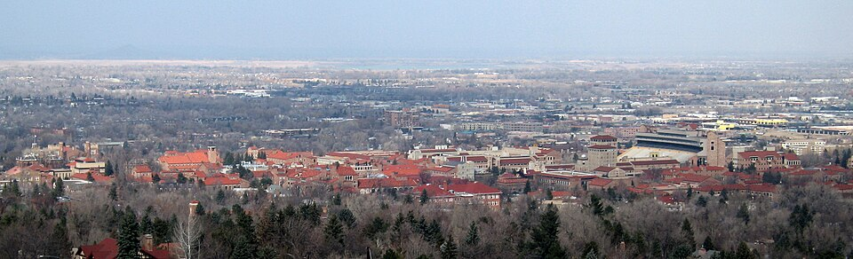
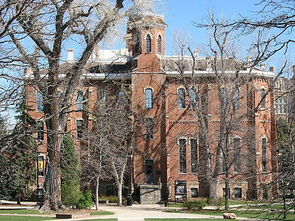
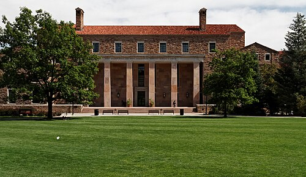
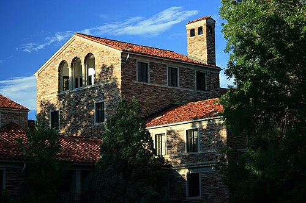
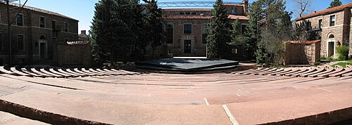
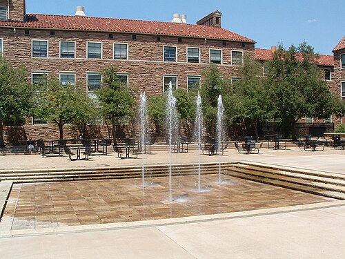
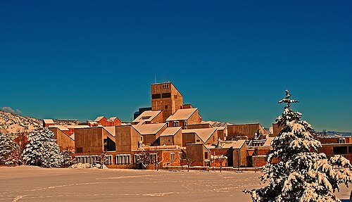
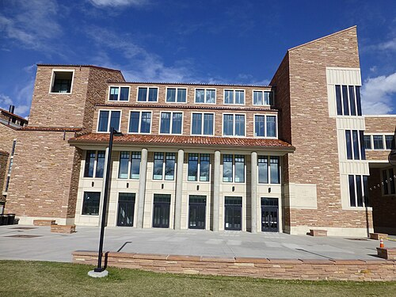
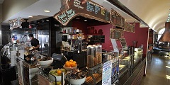
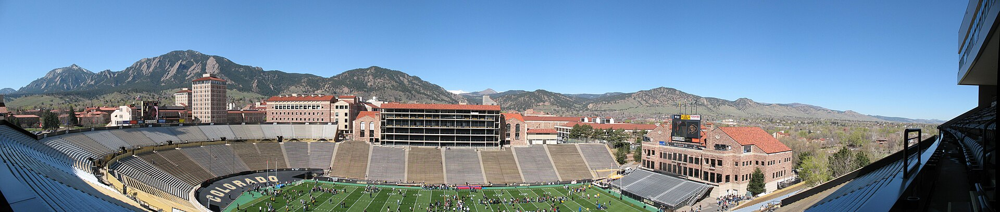

About this article
A semantic HTML5 recode of the Wikipedia article on the University of Colorado.
Overview
The University of Colorado (CU)[4] is a system of public universities in Colorado. It consists of four institutions: the University of Colorado Boulder, the University of Colorado Colorado Springs, the University of Colorado Denver, and the University of Colorado Anschutz.
The system is governed by an elected nine-member board of regents and led by a system president, currently Todd Saliman.
Campuses
CU Boulder
CU Boulder is the flagship university of the system, in Boulder, Colorado. Founded in 1876, it has more than 39,000 undergraduate and graduate students, making it the largest university in Colorado by enrollment.[5] It offers more than 2,500 courses in more than 150 areas of study through its nine colleges and schools. Its athletic program competes in the Big 12 Conference of NCAA Division I.

Boulder campus landmarks










CU Colorado Springs (UCCS)
UCCS is the fastest growing of the three original campuses, with about 12,000 undergraduate and graduate students. Established in 1965, it now offers 45 bachelor's, 22 master's and five doctoral degree programs through its six colleges.[6] The 520-acre campus is in central Colorado Springs. Its athletic program belongs to the Rocky Mountain Athletic Conference of NCAA Division II.
CU Denver
CU Denver is the largest research university in Colorado, attracting more than $420 million in research funding annually and granting more master's degrees than any other institution in the state. The urban campus offers liberal arts, sciences and professional programs in eight schools and colleges, serving over 18,000 students. It sits in downtown Denver on the Auraria Campus, shared with Metropolitan State University of Denver and the Community College of Denver.[7]
CU Anschutz
CU Anschutz, in Aurora, is home to six professional schools in the health sciences and extensive research and clinical care facilities. These include the University of Colorado Hospital, Children's Hospital Colorado and the Anschutz Health and Wellness Center. With more than 4,200 students, it is the largest academic health center in the Rocky Mountain region of the United States.[8] It was established in 2006.
CU South Denver (closed)
CU South Denver, in Lone Tree, opened in 2015 as a satellite campus of CU Denver. It closed permanently in August 2021 because of the COVID-19 pandemic and concerns about its financial viability. At closing it offered four academic programs and served nearly 300 students.[9]
University of Colorado Health
The University of Colorado Hospital Authority (UC Health) was created in 1991 to allow the Regents to reorganize the University of Colorado Hospital.[11]
University of the Arctic
The university is an active member of the University of the Arctic.[12] UArctic is an international cooperative network based in the circumpolar Arctic region. It brings together more than 200 universities, colleges and other organizations interested in promoting education and research in the Arctic.[13]
Presidents
The following people have served as president of the University of Colorado system.[14]
| No. | President | Term start | Term end |
|---|---|---|---|
| 1 | Joseph A. Sewall | 1877 | 1887 |
| 2 | Horace M. Hale | 1887 | 1892 |
| 3 | James H. Baker | 1892 | 1914 |
| 4 | Livingston Farrand | 1914 | 1919 |
| 5 | George Norlin | 1919 | 1939 |
| 6 | Robert L. Stearns | 1939 | 1953 |
| 7 | Ward Darley | 1953 | 1956 |
| 8 | J. Quigg Newton | 1956 | 1963 |
| 9 | Joseph R. Smiley | 1963 | 1969 |
| 10 (interim) | Eugene H. Wilson | 1969 | 1969 |
| 11 | Frederick P. Thieme | 1969 | 1974 |
| 12 | Roland C. Rautenstraus | 1974 | 1980 |
| 13 | Arnold R. Weber | 1980 | 1985 |
| 14 (interim) | William H. Baughn | 1985 | 1985 |
| 15 | E. Gordon Gee | 1985 | 1990 |
| 16 (interim) | William H. Baughn | 1990 | 1991 |
| 17 | Judith E. N. Albino | 1991 | November 15, 1995 |
| Interim | John C. Buechner | November 16, 1995 | May 1996 |
| 18 | John C. Buechner | May 1996 | May 31, 2000 |
| 19 (interim) | Alexander E. Bracken | June 1, 2000 | August 31, 2000 |
| 20 | Elizabeth Hoffman | September 1, 2000 | June 30, 2005 |
| Interim | Hank Brown | August 1, 2005 | May 11, 2006 |
| 21 | Hank Brown | May 11, 2006 | March 7, 2008 |
| 22 | Bruce D. Benson | March 10, 2008 | June 30, 2019 |
| 23 | Mark Kennedy | July 1, 2019 | June 30, 2021 |
| Interim | Todd Saliman | July 1, 2021 | April 27, 2022 |
| 24 | Todd Saliman | April 27, 2022 | Present |
References
- NACUBO, U.S. and Canadian 2024 NCSE Participating Institutions Listed by Fiscal Year 2024 Endowment Market Value, February 10, 2025. ↑
- University of Colorado Boulder, Campus, College & School Names, May 11, 2017. ↑
- CU Boulder Fall 2017 Overall Enrollment Profile (PDF), archived November 16, 2017. ↑
- University of Colorado Colorado Springs, Facts & Figures, archived June 19, 2017. ↑
- University of Colorado Denver, Quick Facts – Accredited Degrees, Research and Health Care. ↑
- About Us, University of Colorado Anschutz Medical Campus. ↑
- About Us, CU South Denver, archived June 30, 2019. ↑
- SB 91–225, chapter 99 of the 1991 Session Laws of Colorado, approved June 1, 1991. ↑
- Members, UArctic, retrieved 2025-03-06. ↑
- About Us, UArctic, retrieved 2025-03-06. ↑
- CU Past Presidents, University of Colorado system. ↑
External links
- Official website
- Portal:University of Colorado at Wikisource